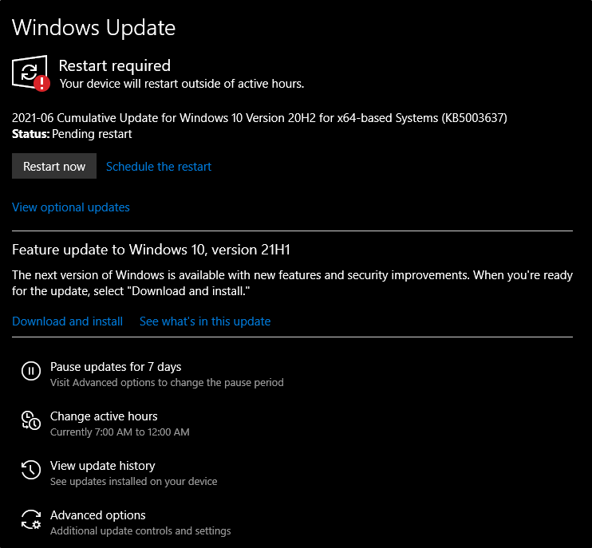
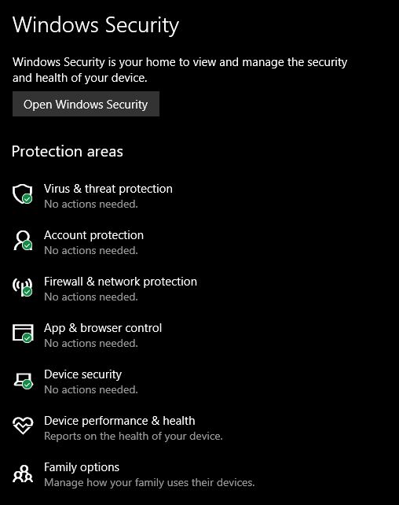

Sécurité Windows : Fonctionnalités et Outils
Windows Updates
 Service proposé par Microsoft qui met à jour en cas de faille de sécurité, ajoute de nouvelles fonctionnalités, et patch les bugs. Généralement le second mardi de chaque mois, mais en cas de problèmes majeurs, il n'y a pas d'attente.Les utilisateurs ont pris l'habitude de repousser les mises à jour car elles nécessitent un redémarrage, notamment avec Windows 10. Pour remédier à cela, Microsoft a mis en place un système de planification, ce qui permet de ne plus oublier les mises à jour et de les effectuer ultérieurement.
Windows Security
L'ensemble des outils qui protège l'appareil et ses données. Windows Security affiche trois niveaux d’alerte concernant la sécurité :
- Vert : votre appareil est suffisamment protégé et il n'y a pas d'actions recommandées.
- Jaune : il y a une recommandation de sécurité à réviser.
- Rouge : un avertissement qu'il y a besoin de votre attention immédiate.
4 zones de protection :

- Virus et protection des menaces
- Pare-feu et protection du réseau
- Contrôle des applications et du navigateur
- Sécurité de l'appareil
Virus & Threat Protection

Cette section se divise en deux parties :
- Menaces actuelles : Scanner les éventuelles menaces et afficher l'historique des menaces.
- Paramètres de protection : Paramétrer la protection contre les virus et menaces.
Firewall & Network Protection
Un pare-feu est ce qui contrôle le trafic entrant et sortant de l'appareil via ses ports. Il y a trois profils de pare-feu :
- Domaine : s'applique aux réseaux où le système peut s'authentifier à un contrôleur de domaine.
- Privé : utilisé pour les réseaux privés ou domestiques.
- Public : utilisé pour les réseaux publics, comme les points chauds Wi-Fi dans les cafés ou les aéroports.
App & Browser Control
Cette fonctionnalité protège contre le phishing, les sites web malveillants et le téléchargement de programmes malveillants. Le filtre SmartScreen analyse les fichiers, les applications et les sites web avant de les exécuter ou d’y accéder.
Exploit Protection protège contre les attaques exploitant des vulnérabilités dans les logiciels et services système.
BitLocker
BitLocker est une fonctionnalité de protection des données qui permet de chiffrer un disque dur afin de protéger les données contre le vol ou l’accès non autorisé, notamment en cas de perte ou de vol de l’ordinateur.
BitLocker est encore plus efficace lorsqu'il est utilisé avec une puce Trusted Platform Module (TPM) version 1.2 ou ultérieure.
Volume Shadow Copy Service (VSS)

VSS permet de créer des copies instantanées des fichiers et systèmes pour la sauvegarde et la restauration. Les fichiers sont stockés dans le dossier "System Volume Information" sur chaque disque où la protection est activée.
Il est possible de créer un point de restauration, restaurer le système, configurer les paramètres de restauration ou supprimer des points de restauration depuis les paramètres système avancés.
Les malwares et ransomwares ciblent souvent ces fichiers de restauration pour les supprimer, rendant impossible la récupération du système. Il est donc recommandé de faire des sauvegardes hors-ligne ou sur un stockage externe.
Ce qu’il reste à découvrir
Il existe encore de nombreuses fonctionnalités et concepts à approfondir pour mieux comprendre et utiliser Windows en toute sécurité. Les pirates utilisent parfois les outils et fonctionnalités intégrés de Windows pour éviter d’être détectés. Cette approche est appelée "Living Off The Land".